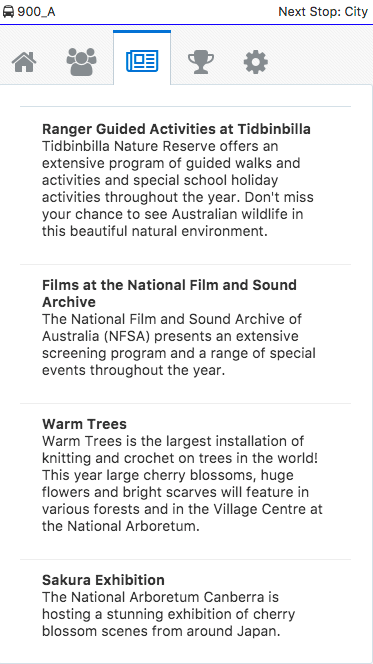
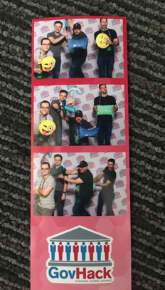
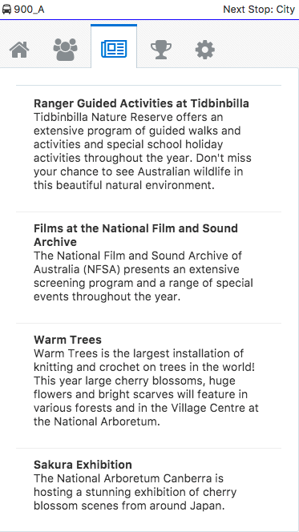
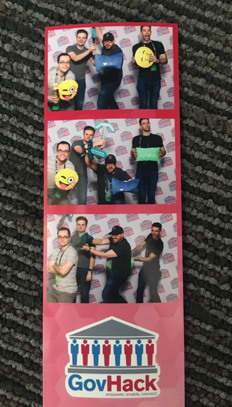

Hyper-local social network with NXTBDY
Encouraging community and engagement with all commuters with Transport Canberra. Get local news and be rewarded for using public transport
NXTBDY Repo NXTBDY Backend NXTBDY DatabaseVideo presentation
About NXTBDY
Encouraging community engagement
We wanted to bring a sense of community to people riding public transport, but were mindful that people may be nervous to communicate in person. A hyper-local social network eases the social awarkedness of starting a conversation and provides tangible benefits to all involved.
Built using cloud services
- Built on the open-source JET framework to provide a quick and clean looking user interface ready for adjusting to suit Transport Canberra's branding.
- The application logic is run a NodeJS server running on Oracle Application Container Cloud, with extra logic for analytics and security provided by Oracle Mobile Cloud Service
- The integration logic is provided using Oracle Integration Cloud to connect to the NXT Bus APIs
- The spatial capabilities of the Oracle Database were leveraged to provide geo-location of buses and census facts
Rewards
Besides having a sense of community, users could be further encouraged to take public transport by receiving discounts on their drivers licences or other road-related Government costs. The application currently tracks progress through the use of badges and this could be leveraged to demonstrate eligibility for the discounts.
Future use cases include
- Integration into the tram network
- Discounts for government services
- Integration into the official NXTBUS app
Team rgb(255,0,0)
- Joel Nation @joelith
- James Ryles @jamesryles
- Chris Flemming @chris_flemming
- Damien McAullay @psyex